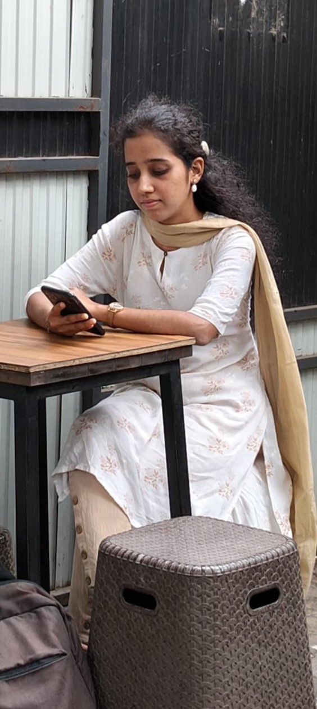

A little moment, a little perspective.
A SMALL NOTE ABOUT ME
A little about the person behind the screen.
I’m Nishanthi — an engineering graduate, a curious learner, and someone who loves understanding how things work. I enjoy exploring technology, solving problems, and turning ideas into something useful. I may not know everything when I begin, but I’m always willing to learn, experiment, make mistakes, and try again.
Curious by nature, thoughtful about the little details, and occasionally guilty of asking one question too many. I like knowing the why behind things, not just the how.
I believe in starting before everything feels perfect. I learn by doing, stay patient through the confusing parts, and trust that every attempt teaches me something.
Outside work, I’m happiest with a crochet project in my hands, my favourite music playing, or a little time by the beach. Simple things have a way of making an ordinary day special.
A little yarn, a favourite playlist, and the sound of waves somewhere nearby — that’s my kind of reset.
A few things about me